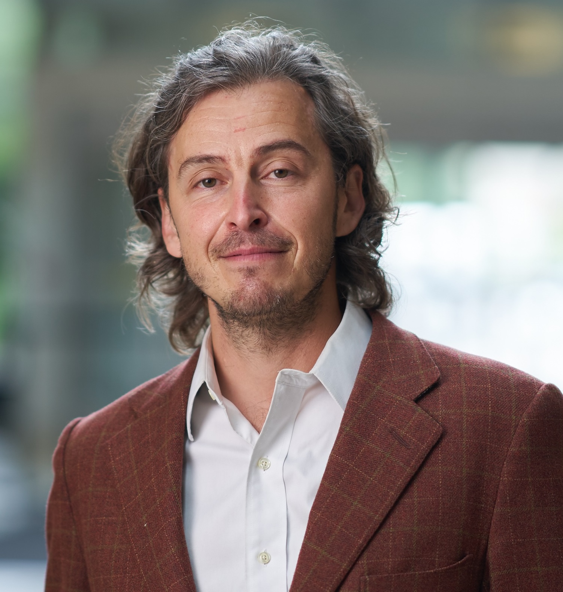
Ilya E. Monosov, PhD, is a neuroscientist and Bloomberg Distinguished Professor at Johns Hopkins University, with a primary appointment in Neuroscience and secondary appointments in Biomedical Engineering, Electrical and Computer Engineering, and Psychiatry. He directs the Laboratory of Adaptive and Maladaptive Behavior and is a member of the Zanvyl Krieger Mind/Brain Institute and the Data Science and AI Institute.
His research spans biological and machine intelligence, including the mechanisms of decision making under uncertainty, curiosity in animals and machines, emotion and brain-body interactions, and circuit and computational models of learning and memory. He also studies how the circuits supporting these functions break down in disorders of mood and cognition, and how they might be restored, particularly in treatment-resistant conditions.
By uncovering how biological circuits produce adaptive and maladaptive behavior and translating these principles into computational psychiatry and machine learning, he aims to improve mental and physical health and to build algorithms that better serve human goals.
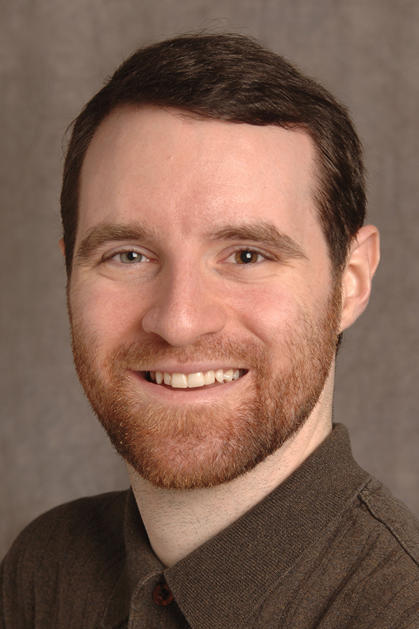
I am Ethan S. Bromberg-Martin, an associate research scientist in the Monosov lab at Johns Hopkins University. I study how the brain learns what things are good and what things are bad, and how it uses this knowledge to banish the bad things and gather the good things! I am especially interested in how our brains motivate us to seek knowledge about the world. In a series of studies along with my collaborators over the years, I have uncovered neural networks in frontal cortex and basal ganglia that guide information seeking. Both in and outside the lab, I believe that learning about the world is not simply a passive process of parameter estimation and error-reduction, but an active delight of exploration and discovery. Why else be a scientist?
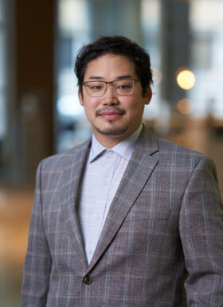
I am Takaya Ogasawara, an Assistant Research Scientist in the lab. I study the neural mechanisms underlying novelty-seeking behavior. Humans and animals are motivated to explore new objects that they have never encountered before. This tendency persists even when seeking novelty is non-instrumental – i.e., when it does not contribute to reward rates or facilitate new learning. Such non-instrumental novelty seeking is a core component of curiosity that supports adaptive behavior and survival. I investigate neural circuits that regulate this behavior, using electrophysiological recordings and chemogenetic circuit manipulation. Outside the lab, I enjoy leather crafting.
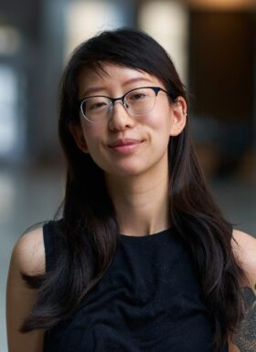
I'm interested in the mechanisms underlying motivated behavior and decision-making. I obtained my Bachelor's degree at NYU and completed my PhD in neuroscience at Washington University in St. Louis in the Monosov lab, where my thesis work focused on how astrocytes in the striatum contribute to reinforcement learning and decision-making. Outside the lab, I like to make pots and watch birds.
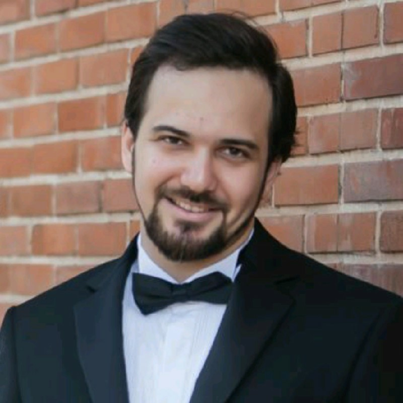
Fatih Sogukpinar is a former PhD student at the Monosov lab. He initially joined the lab as an undergraduate research assistant, and later also worked as a post-bac researcher before doing his PhD in the lab. During his PhD, he worked on computational modeling of human information seeking and reinforcement learning, and astrocytes’ role on reinforcement learning in mice. After his PhD at Monosov lab, he joined Hiratani lab at WashU as a postdoctoral research associate, where he is currently working on theory and computational modeling of continual learning in humans. He obtained his undergraduate degree from Bogazici University, Turkey, in Electrical & Electronics Engineering and Physics. He is curious about many areas of science and philosophy. When he is not working, he is likely playing chess, playing the violin, or watching thrilling shows/documentaries.
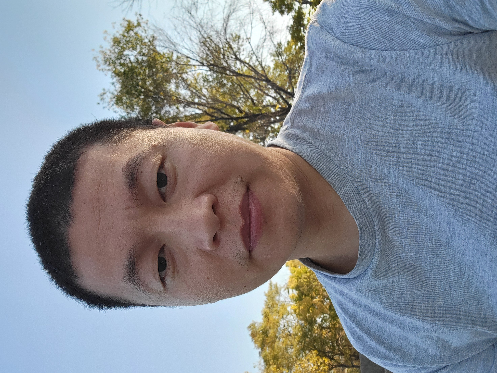
I am Wenliang Wang, a postdoctoral researcher in the lab. My research focuses on the neural mechanisms underlying timing and memory consolidation, with a particular interest in how the brain represents temporal information and transforms experiences into stable, long-term memories.
Short intro.
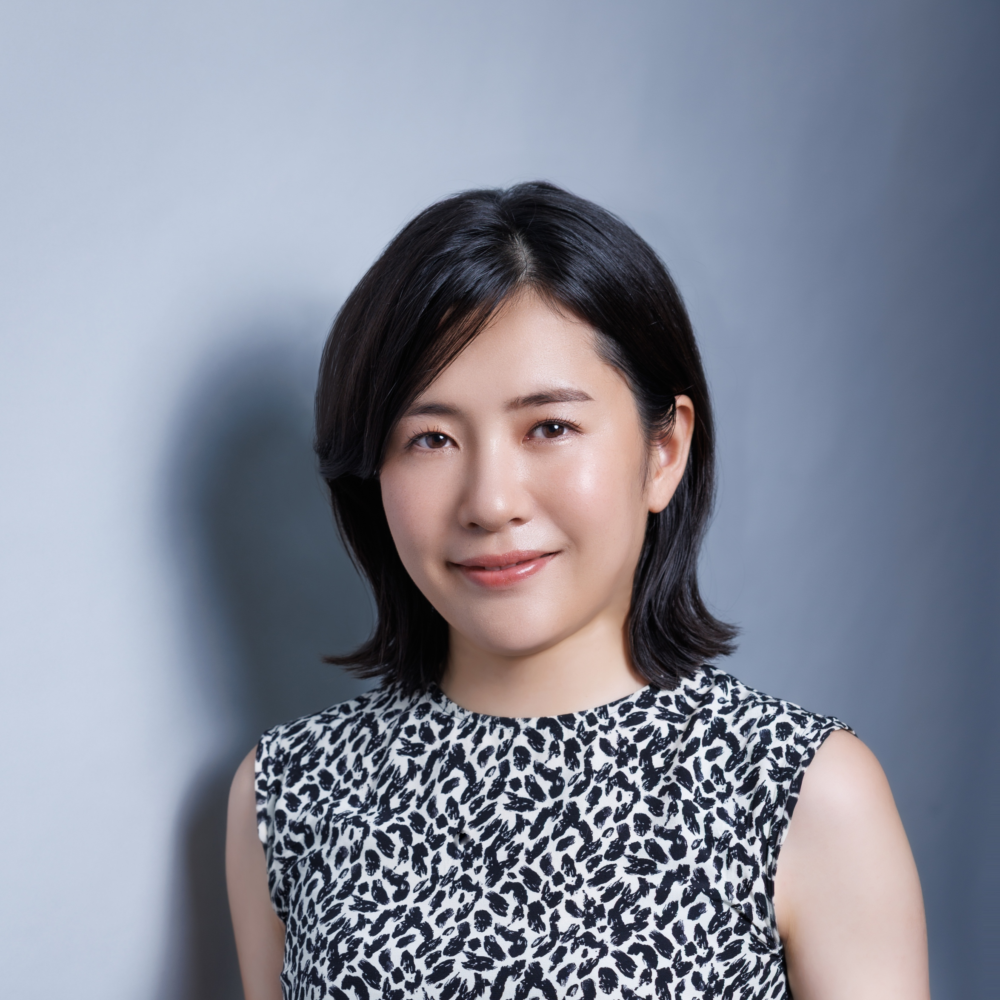
I am a Ph.D. student in the Monosov Lab at Johns Hopkins University. My research explores how early-life maternal interactions influence curiosity, novelty exploration, and decision-making throughout development. More broadly, I am interested in how the brain interprets the external world and how these processes are shaped by experience. Outside the lab, I enjoy exploring new sushi restaurants and farmers' markets.
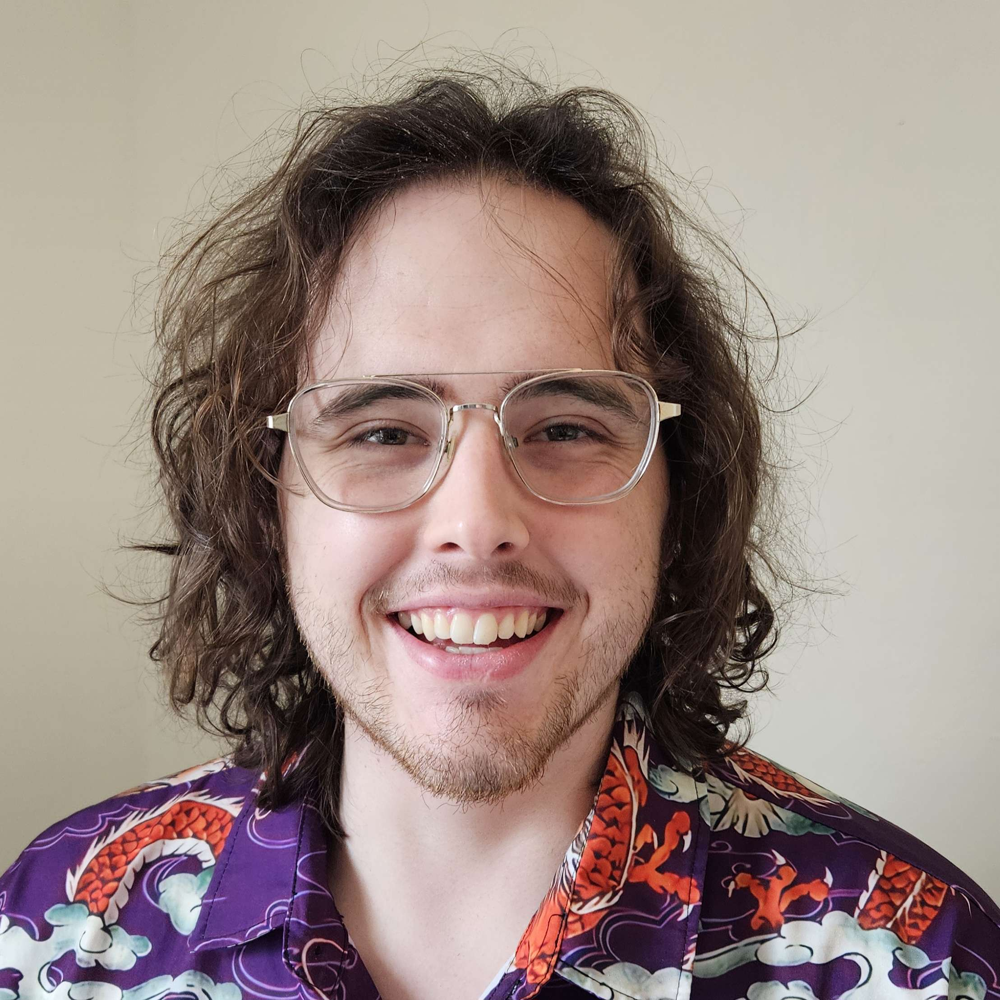
My name is Garrett Smith and I am a neuroscience PhD student in the Monosov lab at Johns Hopkins University. My work focuses on how the brain assigns reward value under shifting naturalistic contexts. Broadly, my interest is in understanding the neural mechanisms supporting the adaptive strategies used by various organisms to optimize reward and resolve uncertainty.
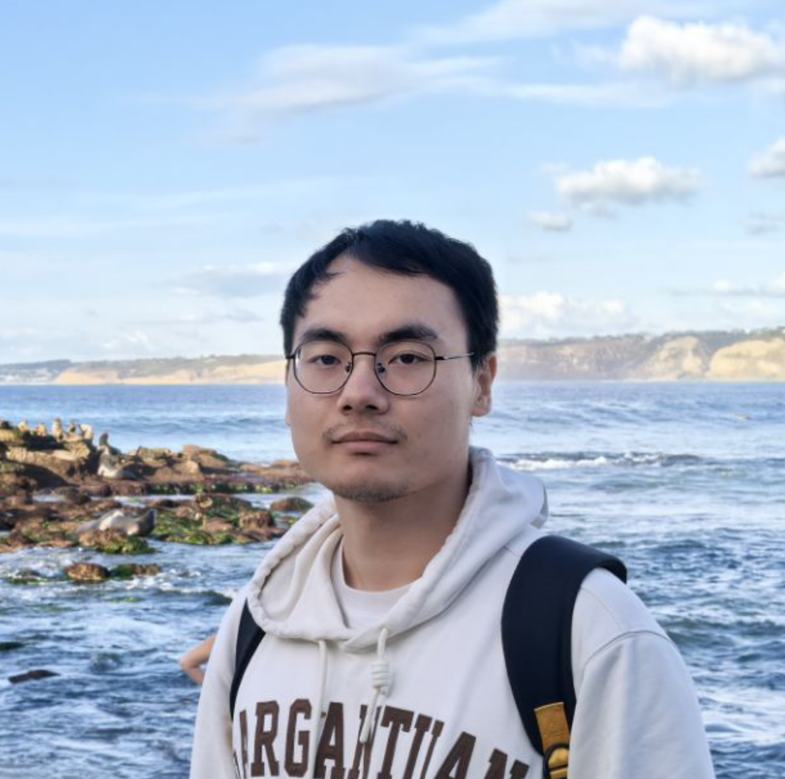
Tianhong Tang is a neuroscience graduate student in the Monosov Lab at Johns Hopkins University. His research uses computational modeling to investigate how prefrontal functional connectivity changes across arousal states and how the thalamus regulates prefrontal network connectivity. More broadly, he is interested in developing mechanistic models to understand the circuit mechanisms underlying animal cognition. Outside the lab, he enjoys bouldering and solving puzzles.
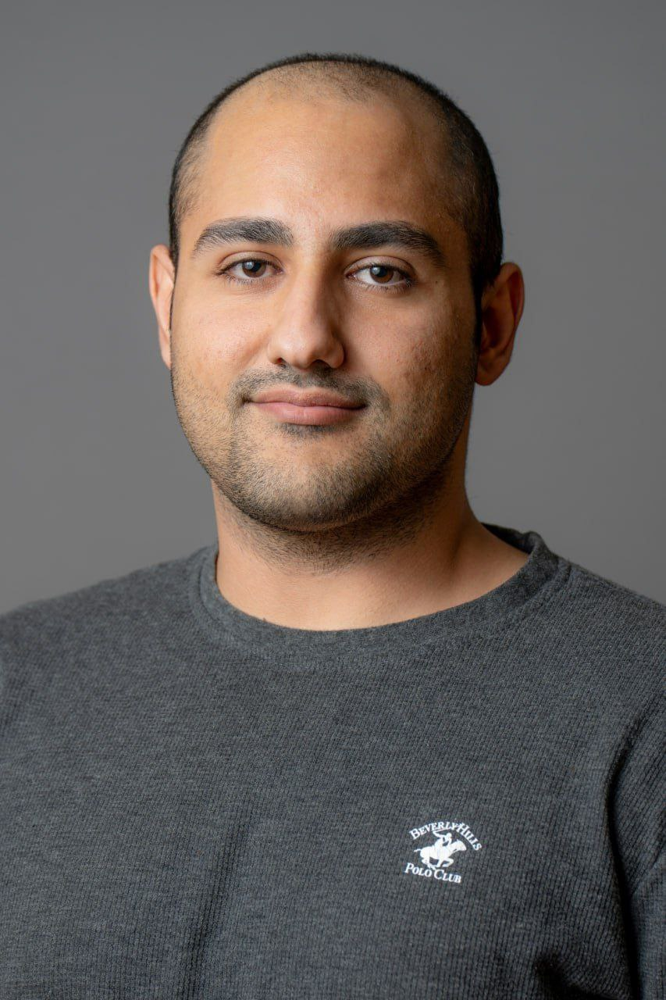
My name is Arman Hatami, and I am interested in learning and unlearning. I am curious about how learning happens, how forgetting occurs, and whether forgetting can actually improve learning. I am also interested in the different ways we learn. Can learning happen through communication and interaction with others? Can we learn indirectly from things that seem unrelated? More broadly, questions about learning and intelligence fascinate me.
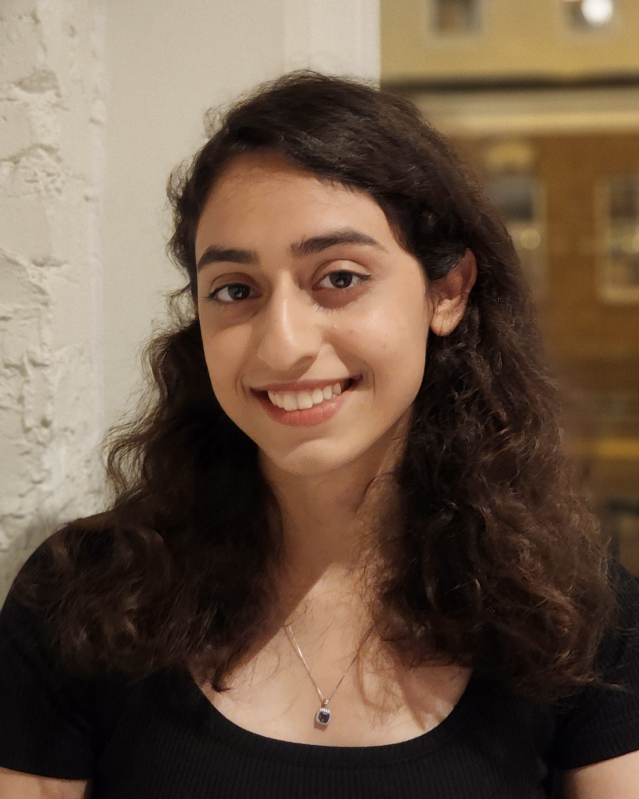
I am interested in (machine) learning, computer vision, and reasoning, especially in understanding how internal representations influence model behavior. My work also involves model architecture design, compression techniques, and representation analysis, with the goal of building neural networks that are more interpretable and robust. I am currently a Ph.D. student in the Department of Electrical and Computer Engineering at Johns Hopkins University. I received my B.Sc. in Electrical Engineering from Amirkabir University of Technology (Tehran Polytechnic) in 2024 and my M.Sc. in Electrical and Computer Engineering from Johns Hopkins University in 2025.
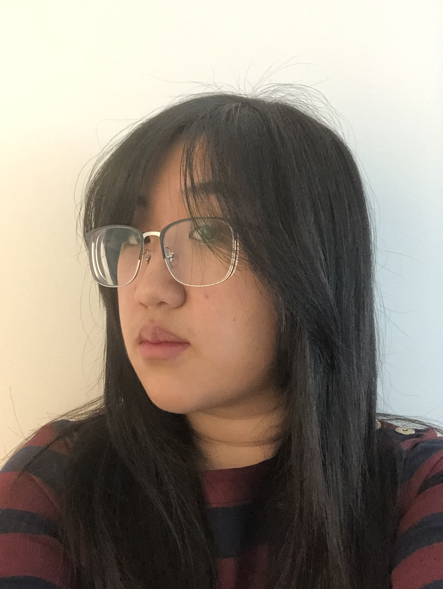
BME PhD Candidate at Johns Hopkins, BS Mathematics at William & Mary. I am interested in studying behavior through modeling and analysis of neural activity, and investigating the mathematical principles shaping neural mechanisms and representations.
Kim holds a B.S. in Anthropology from Washington University in St. Louis. She began her career as a veterinary technician in private practice before transitioning to research at WashU in 2000. She joined the Monosov Lab in 2014 as a research technician and moved with the lab to Johns Hopkins University in 2025, where she now serves as a research technician and lab manager. Kim brings extensive experience in behavioral training, surgical support, and laboratory operations, and provides essential research and administrative support to members of the lab.
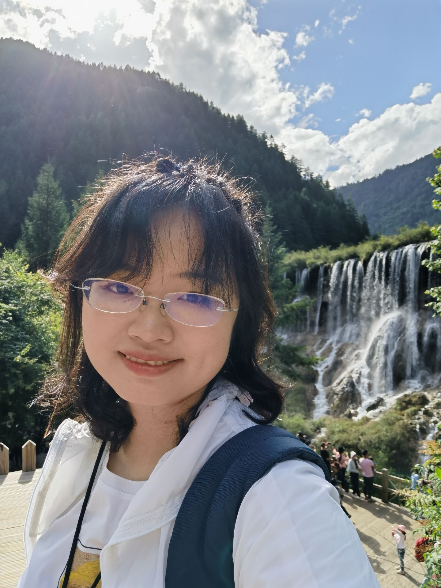
Jingge Liu is a Research Assistant in the lab. She works with lab members on ongoing research projects and is developing her skills in experimental neuroscience techniques. Her research interests focus on how sleep shapes behavior and cognition, particularly learning and memory. Outside the lab, she enjoys painting, bouldering, and puzzle games.
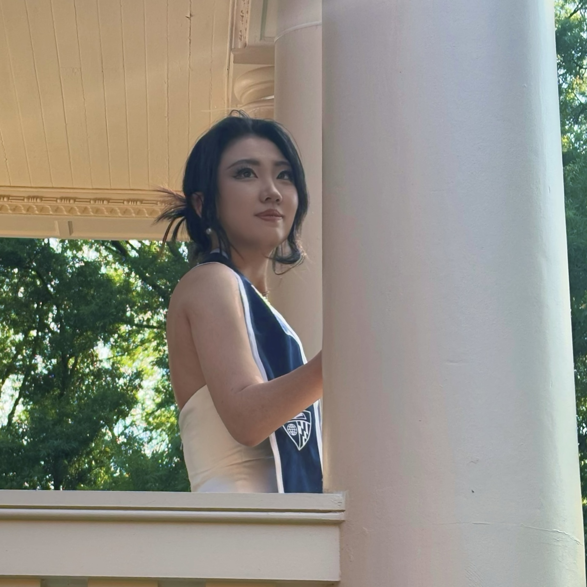
Beiya Xu works as a Research Assistant in the Monosov Lab. She received her master's degree in Biomedical Engineering from Johns Hopkins University, USA, and her bachelor's degree in Biomedical Engineering from Huazhong University of Science and Technology, China. Beiya is working with @Ethan Bromberg-Martin to test different information-seeking theories in humans and is interested in exploration–exploitation processes across different domains, such as the semantic domain. Outside the lab, she enjoys playing video games and swimming. She is also finding the sweet spot on her own exploration–exploitation curve as she navigates this beautiful world.
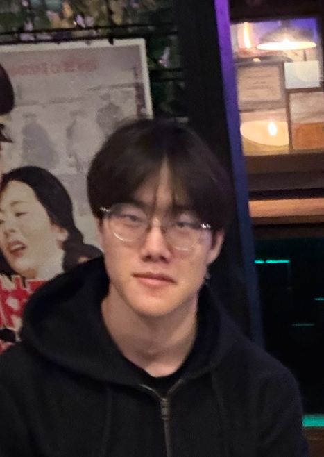
Patrick is an undergrad currently studying Neuroscience and Visual Arts at Johns Hopkins University. In the lab, he is exploring neural circuits linking uncertainty and punishment to their downstream consequences on the body. Out of the lab, Patrick spends his free time playing games, drawing, and going to the gym.
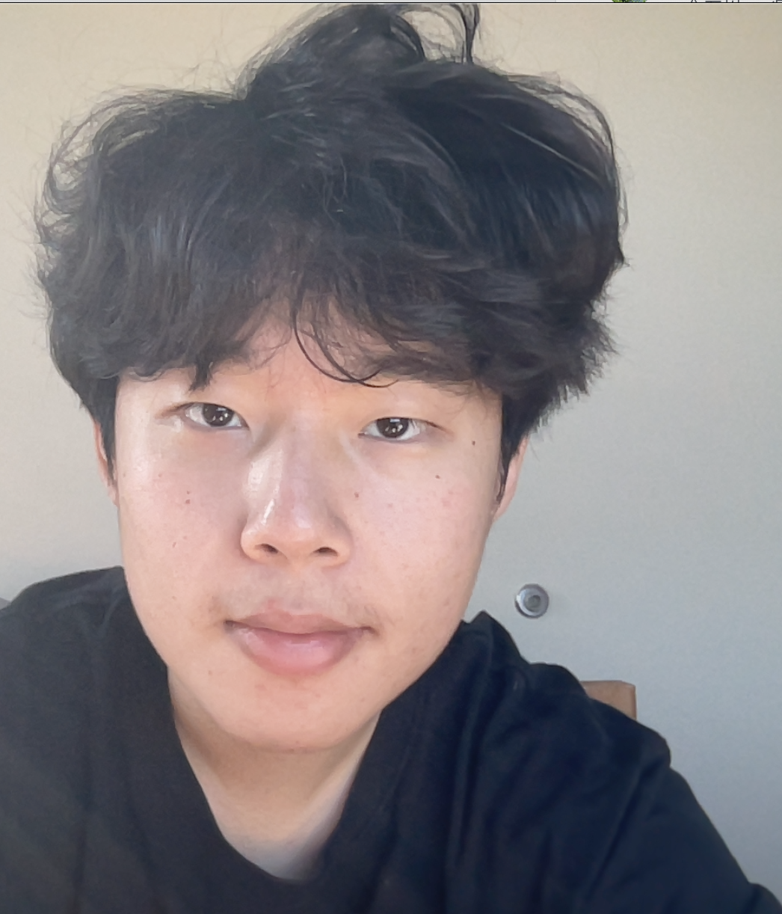
I'm a senior undergraduate at Johns Hopkins University, double majoring in Computer Science and Neuroscience. My research interests lie in natural language processing and machine learning, with a focus on interpretable representation learning. I study how directly rewarding specific properties of LLMs' internal representations can encourage desirable model behaviors. I work with Professor Ilya Monosov on quantifying uncertainty in LLMs through probing. Our goal is to use the structure of models' hidden representations as a direct signal for guiding exploration-exploitation decisions toward actions that reduce predicted uncertainty about a question of interest.
We have openings for undergraduate, graduate students, and postdocs. We are looking for highly dedicated, self-driven people who want to make big discoveries and who value mentorship. Science is work, but it is also something else, and our team welcomes people and works best with people who are moved by that something else.
Get in touch